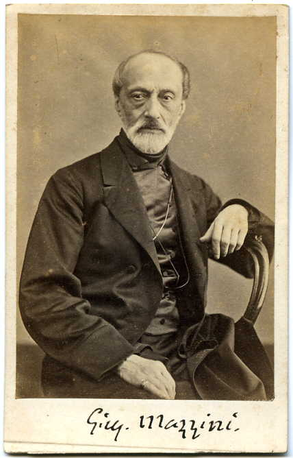
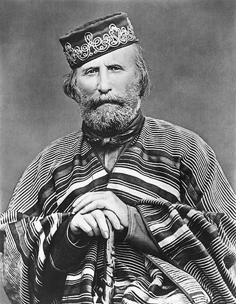
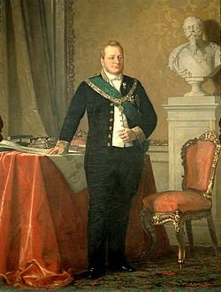

Important People in the Italian Unification:
Giuseppe Mazzini

- member of the Carbonari
- created Young Italy
- wrote about revolution and a united Italian Republic
- Goals
- eliminate Austria's rule over Italian countries
- overthow Italian tyrants
- unite Italy as a liberal and democratic republic
Giuseppe Garibaldi

- member of the Carbonari and a follower of Mazzini
- responsible for leading the Red Shirts to take over southern Italy
- wanted a democratic republic, but more importantly a unified Italy
- had to compromise withh Cavour for a unified Italy under a constitutional monarchy
Count Camillo Cavour("Unifier of Italy")

- Prime Minister of Piedmont
- admired the constitutional government of Great Britain and France
- Goal: unite Northern Italy as a liberal constitutional monarchy ruled by the House of Savoy